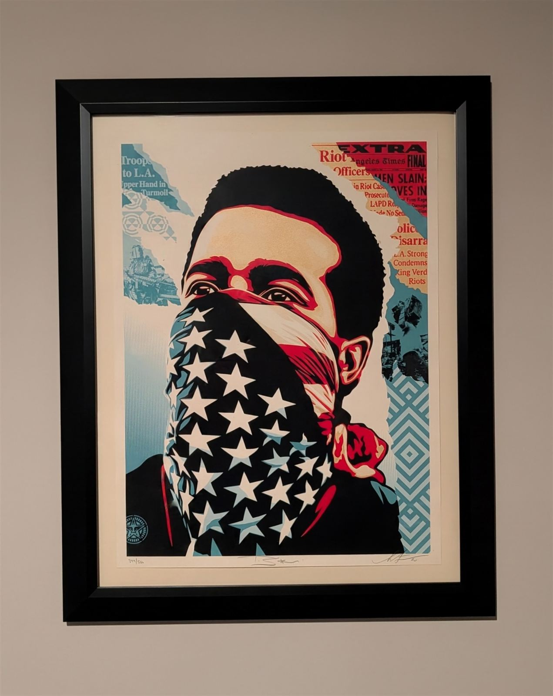
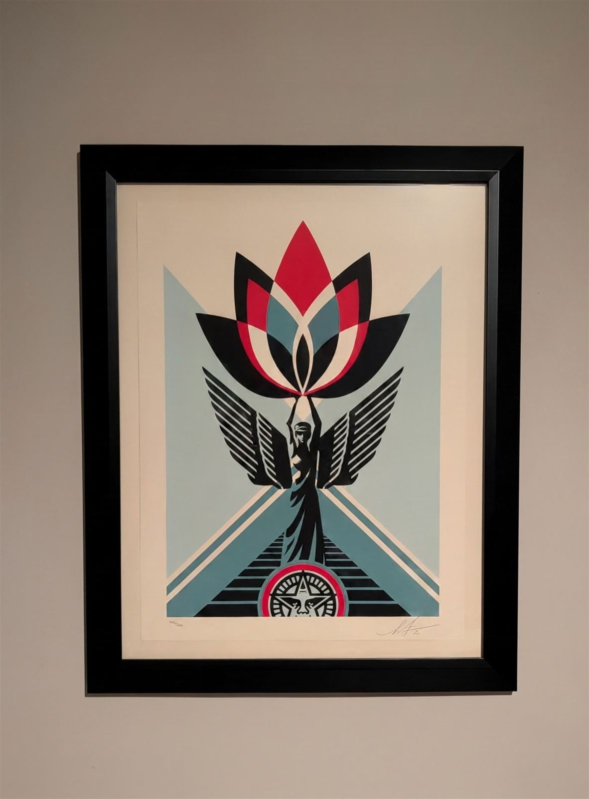
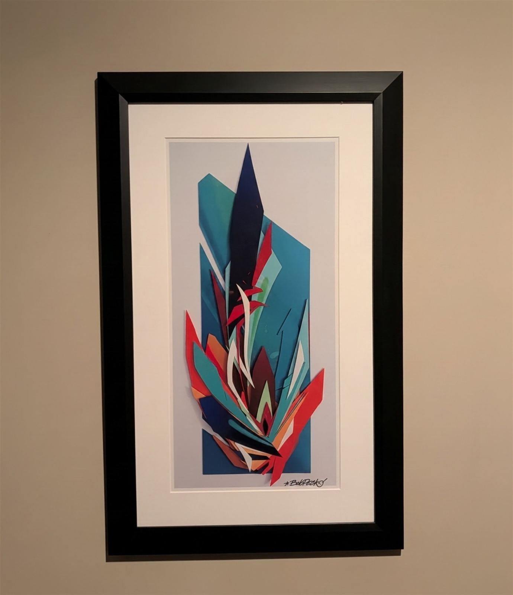

A personal collection, currently being catalogued.
The pieces I've collected over the years — each with the artist behind it, the story of the work, and the work itself.

Screenprint on Speckletone cream paper, 18 × 24 in. Edition 399 of 550, signed and numbered in pencil by both Shepard Fairey and photographer Ted Soqui.
Fairey built the image on Soqui's photograph from the 1992 Los Angeles riots — the torn Los Angeles Times headlines in the collage are from that spring. The edition dropped on April 30, 2020, sold out in minutes, and its proceeds went to the Watts Labor Community Action Committee.

Screenprint on cream Speckletone paper, 18 × 24 in. Edition 405 of 500, signed and numbered in pencil.
Released in the first weeks of the pandemic, March 2020, as a fundraiser — Fairey's angel raising a lotus was his call for hope, compassion, and resilience in the face of adversity. Proceeds went to the Mayor's Fund for Los Angeles and the World Harvest Food Bank.

Layered scrap PVC, signed. Built during the 2020 lockdown: with the art stores closed and no canvas to be had, Peck cut the piece from offcuts at his sign shop instead. Turn it 90 degrees clockwise and the title reveals itself — an Eye of Horus. Abstracted, of course.
Peck is a Cleveland graffiti writer more than thirty-five years deep, who followed the backgrounds of his own pieces — the loose sprays, wisps, and bursts — into abstract expressionism. He's painted murals and public commissions across the region for two decades, presented graffiti history with the Rock and Roll Hall of Fame, and works with Graffiti HeArt, which funds art scholarships for under-served kids. A hometown pick, from the same Cleveland graffiti tradition I came out of.
More of the collection is being catalogued.